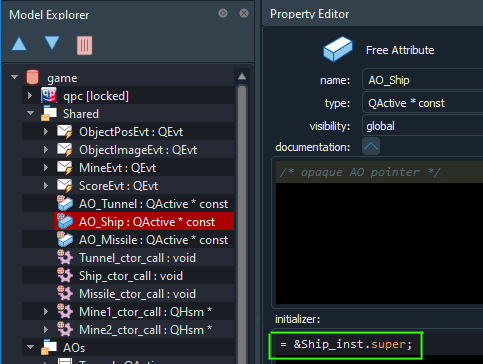
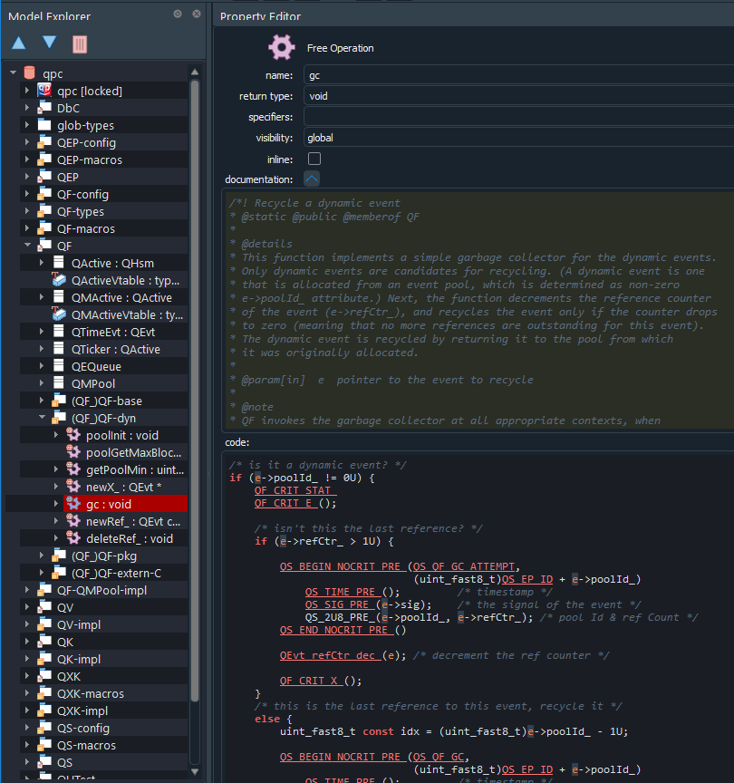

QM
6.1.1
Model-Based Design Tool
The $define ${<model-item>} directive requests generating a definition of the <model-item>. QM can generate definitions for the following item types:

Calc with a State Machine used in the following examples of code generationThe directive $define ${<Class>} generates the class definition, which consists of all operations (member functions) defiend in the class as well as all static attributes (class variables). Additionally, if the class has a State Machine, the State Machine code will also be generated.
The following listing shows fragments of the generated code for the class Calc in C. The code shows class operations, such as `Calc_eval().
Calc class operation in the C code above is defined as static because the QM code generator detected that the Calc class declaration was also placed in the same file scope. This use of static is mandated by MISRA-C:2012 Rule 8.8.The following listing shows fragments of the generated code for the class Calc in C++. The code shows class operations, such as Calc::Calc() constructor and the Calc::eval() opertion.

AO_Ship with an "initializer" used in the code generation examplesThe following listing shows fragments of the generated code for the free attribute AO_Ship in C.
const and cannot be initialized later.The following listing shows fragments of the generated code for the free attribute AO_Ship in C++.
const and cannot be initialized later.
gc() in a package with namespace QF_ resulting in QF_gc()The following listing shows fragments of the generated code for the free operation gc() in C.
gc() in a package QF-dyn with namespace QF_ resulting in QF_gc()The following listing shows fragments of the generated code for the free operation gc() in C.
gc() in a package QF-dyn with namespace QF:: resulting in QF::gc()The $define ${<package>} directive requests generating a recursive definition of all classes, free attributes, and free operations in the <package>, as described in the sections above. If a package contains other packages, these packages are recursively defined, as described in the first sentence.